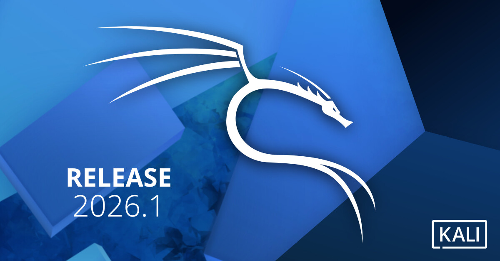
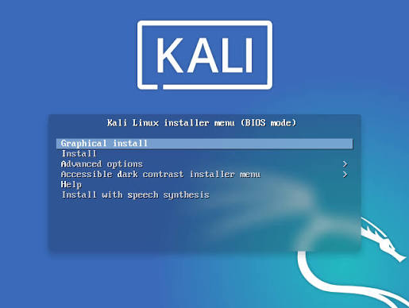

Kali Linux: Setup, Labs & Penetration Testing
Learn how to download, install, and configure Kali Linux, build a safe virtual lab, integrate it with network simulators, and execute basic penetration testing methodologies.

1. Download & Installation
Kali Linux is the premier platform for penetration testing. To get started, you need to download the appropriate image from the official Offensive Security website. For beginners, it is highly recommended to run Kali as a Virtual Machine (VM) inside a hypervisor like VirtualBox or VMware.

Installation Steps:
- Download the Image: Go to kali.org/get-kali and select the "Virtual Machines" tab. Download the pre-built image for your hypervisor (VirtualBox or VMware).
- Import the VM: Open your hypervisor and double-click the downloaded .ova or .ovf file to import Kali. Accept the default hardware settings (2GB RAM, 2 CPUs minimum).
- Default Credentials: The default username is kali and the password is kali.
- Update the System: Open the terminal and run the following commands to ensure all tools are up to date:
sudo apt update && sudo apt full-upgrade -y
2. Basic Usage & Navigation
Kali Linux uses the XFCE desktop environment by default, which is lightweight and highly customizable. Tools are categorized by phases of penetration testing (e.g., Information Gathering, Vulnerability Analysis, Exploitation Tools) accessible via the application menu.

To get comfortable, practice basic Linux commands:
- pwd (Print working directory)
- ls -la (List all files and permissions)
- cd /path/to/folder (Change directory)
- ifconfig or ip a (Check network interfaces and IP address)
3. Building a Virtual Penetration Testing Lab
Never test your skills against systems you do not own or have explicit permission to test. Building a local virtual lab is the safest and most effective way to learn. A standard lab consists of an "Attacker" VM (Kali Linux) and one or more "Target" VMs.
Essential Target VMs for Your Lab
- Metasploitable 2: An intentionally vulnerable Ubuntu Linux VM designed specifically for practicing Metasploit.
- DVWA (Damn Vulnerable Web Application): A PHP/MySQL web application with vulnerabilities at varying difficulty levels.
- Windows XP/7 (Isolated): Older, unpatched Windows VMs (available via Microsoft IE/Edge VMs) for practicing exploit development and SMB vulnerabilities like EternalBlue.
Metasploitable 2: This is the go-to target for beginners. It contains intentionally vulnerable services running on ports like FTP (vsftpd 2.3.4), SSH, and Telnet. It is perfect for learning how to use the Metasploit Framework.
DVWA: Hosted on a web server (like Apache on Kali), DVWA allows you to practice web application attacks like SQL Injection, Cross-Site Scripting (XSS), and Command Injection. It has a "Security Level" slider so you can start with easy bypasses and work your way up to hard.
Ensure all VMs are attached to the same "Host-Only" or "Internal Network" adapter in your hypervisor settings. This isolates the lab from your physical network and the internet, preventing accidental exposure of vulnerable machines.
4. Integrating Kali with GNS3 & EVE-NG
For advanced network penetration testing, you need to simulate complex enterprise topologies. Tools like GNS3 and EVE-NG allow you to run real router and switch operating systems (like Cisco IOS) alongside your Kali VM.

Integration Methods:
- Method 1 (QEMU/VirtualBox Integration): In GNS3, you can add your existing Kali VirtualBox or VMware VM as a "node." Drag the Kali node onto the canvas and connect its interface directly to a simulated Cisco router.
- Method 2 (EVE-NG QEMU Image): In EVE-NG, upload the Kali Linux QEMU image (.qcow2) to the /opt/unetlab/addons/qemu/ directory. You can then drag and drop Kali into your EVE-NG topology like any other network device.
This setup allows you to practice attacking routed networks, bypassing ACLs, and testing Intrusion Detection Systems (IDS) like Snort or Suricata placed in between.
5. How to Use Kali for Penetration Testing
Penetration testing follows a structured methodology. Here is a basic workflow using Kali tools against a target in your lab (e.g., 192.168.1.100).
Step 1: Network Scanning (Nmap)
First, discover open ports and services running on the target.
nmap -sC -sV -p- 192.168.1.100Step 2: Vulnerability Analysis
Once you know the services (e.g., an outdated FTP server), search for exploits using Searchsploit or launch Nessus/OpenVAS to scan for known CVEs.
searchsploit ftp vsftpd 2.3.4Step 3: Exploitation (Metasploit)
Use the Metasploit Framework to exploit the discovered vulnerability and gain a shell on the target machine.
msfconsole
use exploit/unix/ftp/vsftpd_234_backdoor
set RHOSTS 192.168.1.100
exploitPro Tip
Always document your steps. In a real engagement, reporting is 70% of the job. Use tools like CherryTree or Dradis (pre-installed in Kali) to keep track of your findings, commands, and screenshots.